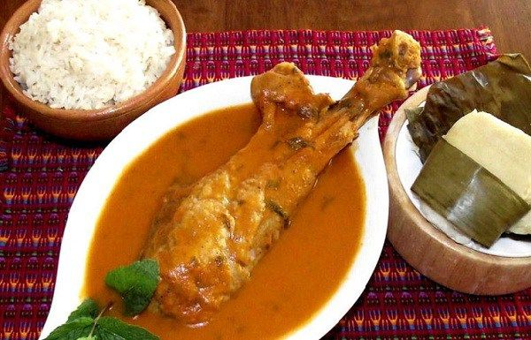

INGREDIENTES:
2 lbs Pavo
1 Cebolla en trozos
4 Dientes de ajo
Sal y pimienta Agua
8 Tomates
4 Miltomates
2 Cebollas
4 Dientes de ajo
1 Manojo de hierva buena
1 Manojo de cilantro
PROCEDIMIENTOS:
En una olla de presión vertemos hasta la mitad agua, colocar las piezas de pavo, sal, pimienta al gusto, 2 dientes de ajo y una cebolla en trozos. Cocinamos y dejamos que hierva por 20 minutos. En un sartén colocamos los 8 tomates, 1 cebolla, 4 miltomates, 1 diente de ajo y los vamos asar.
Cuando tengamos ya todos los ingredientes asados los agregamos en una licuadora y tomamos un poco del caldo del pavo y los agregamos seguidamente licuamos. (podemos agregarle un poco de achiote para darle un tono mas rojo al recado).
Una ves licuados los ingredientes vamos a verter la mezcla en la olla donde esta el pavo. Con el manojo de hierva buena y cilantro los amarramos y los colocamos en el caldo y dejamos que hierva por 15 minutos mas. Listo tenemos nuestro Kak’ik guatemalteco.
Puedes acompañar este Kak’ik guatemalteco con una taza de arroz para darle un toque mas de sabor a esta deliciosa comida típica guatemalteca.
INGREDIENTES:
4 chuletas de cerdo
30 g de mantequilla
50 g de azúcar
1 diente de ajo
30 g de Maizena
1 brote de romero
El zumo de medio limón
2 naranjas
1 pimiento verde italiano
Aceite de oliva
Pimienta negra
PROCEDIMIENTO:
Trocear el pimiento en trozos pequeños, cortar el ajo en rodajas, una naranja y media en rodajas finas, y exprimir la media naranja restante.
Salpimentar las chuletas por los dos lados, espolvorearlas con un poco de azúcar.
En una sartén grande deshacer la mantequilla y un poco de aceite, dorar las chuletas por ambos lados junto con los ajos. Una vez doradas, retirarlas y desechar los ajos.
Añadir a la grasa de la sartén el resto de azúcar, la Maizena, y el romero, y cocer sin dejar de remover, añadiendo 250 ml de agua poco a poco hasta que adquiera un aspecto lustroso. En ese momento añadir el zumo de naranja, el zumo de limón y el pimiento.
Agregar las chuletas a la sartén, poner una rodaja de naranja sobre cada chuleta. Tapar la sartén y continuar a fuego suave durante 20 minutos o hasta que estén tiernas, moviendo la sartén en vaivén de vez en cuando.
Servir el plato adornado con las rodajas de naranja.